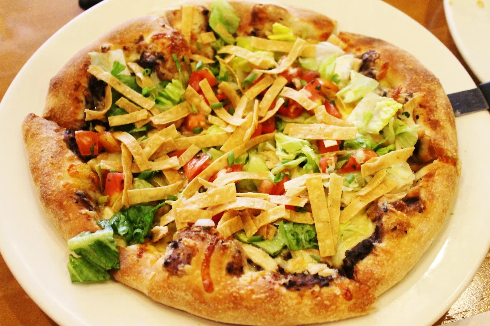

Acapulco Chicken Pizza

Ingredients
- 1 Tbs vegetable oil
- 3/4 lb fresh boneless, skinless chicken breasts, sliced
- 1 package Ortega Taco Seasoning Mix
- 3 Tbs cayenne pepper
- 5 Tbs Ortega Medium Taco Sauce
- 2 12-inch flour tortillas
- 8 oz Ortega Refried Bean
Procedure
-
STEP 1
Add oil to a large heated skillet; stir in chicken, taco seasoning mix and cayenne pepper and cook until browned. Stir in first amount of taco sauce and remove from the heat. -
STEP 2
2 On a large plate, place flour tortillas; divide and spread with refried beans, being sure to cover the entire tortilla. Add the chicken mixture over the beans and sprinkle remaining taco sauce, grated Monterey cheese, and grated Cheddar cheese on top. -
STEP 3
3 Bake in a 375°F; oven until the cheese is bubbly, about 10 minutes. Remove and cut into wedges. Serve with shredded lettuce, mashed avocados, and diced tomato